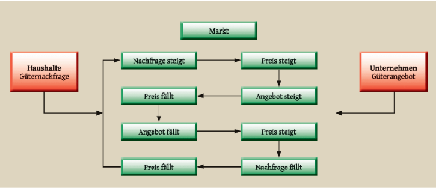

Absolute Konkurrenz
Die Eisauktion ist so gestaltet, dass sie einen idealtypischen Markt unter Bedingungen der absoluten (vollständigen) Konkurrenz sichtbar macht: Preisbildung, Wettbewerbsdruck und die Rolle von Kosten.
Grundannahmen der vollständigen Konkurrenz
1) Viele Anbieter und viele Nachfrager
Es gibt viele Unternehmen (Anbieter) und viele Käuferinnen/Käufer (Nachfrager). Deshalb kann niemand allein den Preis bestimmen. Einzelne Anbieter sind Preisnehmer: Sie müssen den Marktpreis akzeptieren und ihre Entscheidungen daran ausrichten.
2) Homogene Güter
Das Gut ist wirtschaftlich gesehen gleich (homogen): In der Simulation ist „Eis“ identisch. Es gibt keine Marken- oder Qualitätsunterschiede. Wettbewerb entsteht daher besonders stark über den Preis und über die Kosten der Anbieter.
3) Vollständige Markttransparenz
Relevante Informationen sind beobachtbar (Preise, angebotene Mengen, Nachfrage). Dadurch steigt der Wettbewerbsdruck, weil günstige Angebote schnell sichtbar werden und Käufer entsprechend reagieren.
4) Freier Marktein- und -austritt
Es gibt keine dauerhaften Barrieren: Wer langfristig Verluste macht, reduziert oder steigt aus. Wer Gewinne sieht, könnte (im Modell) neu in den Markt eintreten.
Preisbildung unter Konkurrenz: Angebot & Nachfrage
Im Modell reagieren Marktteilnehmer auf Signale: Wenn Nachfrage steigt, steigt tendenziell der Preis – und Anbieter reagieren mit mehr Angebot. Umgekehrt drücken hohes Angebot oder sinkende Nachfrage den Preis.

Quelle: Das Lexikon der Wirtschaft. Grundlegendes Wissen von A bis Z, Bonn 2008, S. 77.
Homo oeconomicus: Das Modell vom „rationalen Entscheider“
In vielen klassischen Modellen wird angenommen, dass Menschen als Homo oeconomicus handeln: Sie entscheiden rational, verfolgen eigene Ziele und nutzen Informationen, um den besten Vorteil zu erreichen.
Typische Annahmen
- Käufer wollen mit ihrem Budget möglichst viel Nutzen erzielen (z. B. möglichst viel Eis).
- Unternehmen wollen Gewinn maximieren bzw. Verluste vermeiden.
- Entscheidungen orientieren sich an Preisen und Kosten (z. B. Grenzkosten).
Grenze des Modells
- Menschen entscheiden nicht immer perfekt rational (Emotionen, Gewohnheiten, Fairness).
- Information ist oft unvollständig oder wird unterschiedlich interpretiert.
- Im echten Speiseeismarkt spielen Qualität, Image und Standort eine Rolle.
In der Eisauktion nähern wir uns dem Modell an: Käufer vergleichen Preise, Unternehmen rechnen mit Kosten – aber in der Auswertung könnt ihr prüfen, wo reale Entscheidungen davon abweichen.
Klassische Bezugsfigur: Adam Smith (1723–1790)
Adam Smith gilt als zentrale Bezugsfigur der klassischen Wirtschaftswissenschaften. Seine Überlegungen zur Arbeitsteilung, zu Märkten und zur Koordination über Preise (häufig mit dem Bild der „unsichtbaren Hand“ verbunden) prägen bis heute wirtschaftliche Grundmodelle.